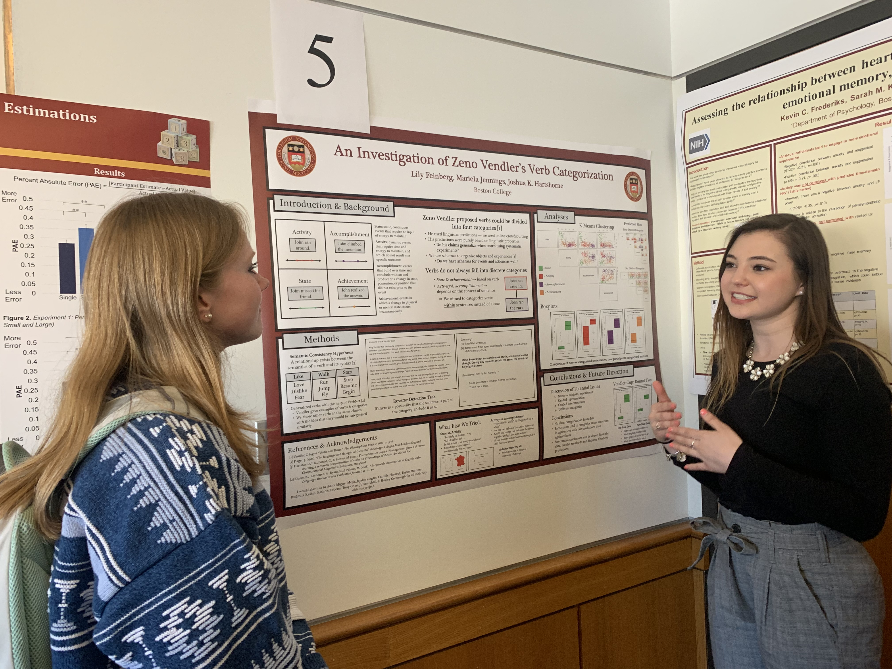

Latest News
1.4.24


Profs. Hartshorne and Prud'hommeaux visited colleagues in Taiwan for our Indigenous Languages Project.
11.18.23

The lab held a bonding bowling activity.
8.2.23
Hartshorne was on KQED to discuss language-learning apps.
Click here to listen to the recording.
7.28.22
Congratulations to Wei Li for presenting at her first in-person conference (Cognitive Science Society)!
7.10.23
Hartshorne and the lab's work was described in a Wall Street Journal article titled: Here's When We Hit Our Physical and Mental Peaks.
6.28.23

The lab held the first Pushkin hackathon June 26-28 at MIT Endicott House.
6.26.23
Joshua Hartshorne and authors have published a new paper in the Journal of Experimental Psychology: General:
Cognitive Control Across the Lifespan: Congruency Effects Reveal Divergent Developmental Trajectories
3.28.23
L3 Josh Hartshorne, former postdoc Yujing Huang, and former lab manager Lauren Skorb published a new paper on how children learn verbs.
3.24.23
Wenshuo has been named a Dean's Scholar
3.24.23
JKH was awarded an NSF CAREER grant to study conceptual change.
2.6.23
L3 welcomes our newest lab members Jesse Storbeck, Hao Zeng, Zakir Makhani, Le "Sarah" You, Duncan Wang, and Mark Chudnovsky!
1.23.23
Our work is highlighted in this commentary in Nature.
11.05.22
Help us launch a new research program on intuitive physics. Read about our open graduate positions here.
9.13.22
Talk
DOI English
DOI Spanish
9.13.22
Joshua Hartshorne was awarded a new grant from the National Science Foundation, titled "An open-source ecosystem for massive online experiments and citizen science."
6.7.22
Congratulations to our postdoc Aidas who had a paper accepted in Science! Read about it here.
5.9.22
Congratulations to Ethan Amato for completing his honors thesis and being part of the graduating class of 2022!
10.8.21
Joshua Hartshorne has published a new paper in the Annual Review of Linguistics:
When Do Children Lose the Language Instinct? A Critical Review of the Critical Periods Literature
8.2.21
L3 welcomes Mengguo Jing as its newest postdoctoral researcher!
7.27.21
Just give them childcare: The COVID-19 pandemic as a natural experiment in parenting practices
7.26.21
Dr. Hartshorne is accepting new graduate students this year! See our Join page for more details.
6.3.21
Recent BC alumn, Tony Chen, publishes with the lab!
5.23.21
A special congratulations to Everett Kim and Jocelyn Chan for being part of the graduating class of 2021!
1.4.21
Our new paper, "How massive online experiments (MOEs) can illuminate critical and sensitive periods in development" has been published.
1.4.21
Jeremiah Isaac joins L3 as the new Northeastern co-op!
12.18.20
Joshua Hartshorne was quoted in a Boston Globe article on pandemic screen time.
11.13.20
Joshua Hartshorne, along with former undergrad Lily Feinberg and former lab manager Lauren Skorb, has published two papers in Advances in Methods and Practices in Psychological Science.[1] [2]
He has also published a solo paper in Current Opinion in Behavioral Sciences.
10.30.20
Parker Robbins presented findings from the KidTalk project at the USC Center for Economic and Social Research's COVID-19
Work in Progress Conference.
9.10.20
In Quarantine, Kids Pick Up Parents’ Mother Tongues
9.1.20
L3 welcomes two new members to the KidTalk team: Alejandra Trejo and Ezekiel (Zeke) Coleman!
8.31.20
Welcome to Wei Li, now officially the lab's second grad student!
7.16.20
KidTalk: A Natural Experiment in the Time of COVID-19 !
7.1.20
L3 welcomes two new Northeastern Co-ops: Alex Ichimura and Megan Rest!
5.18.20
A special congratulations to Jaq Pyle, Tony Chen, and Wendy Uelk for being part of the graduating class of 2020!
4.22.20
L3 is now studying the effects of social distancing on language development! "Have COVID-19 affected young children's daily lives? Researchers at Boston College want to know! If you live with a child 1 to 9 years old, please fill out this 3-minute survey.
1.6.20
Anna Petti, a co-op research assistant from Northeastern University, joins L3!
11.21.19
Joshua Hartshorne and Mariela Jennings were co-authors in a new paper in Science on cultural universals in music.
9.18.19
The lab was awarded a new three-year grant from the National Science Foundation to study the role of unsupervised learning in early language acquisition.
9.17.19
Check out this interview, where Josh discusses language acquisition, immersion, and the critical period!
5.13.19
Read about our work on lifespan development in the Boston Globe!
5.06.19
Three of our lab members presented their work at PURC! Congrats Juliani Vidal, Lily Feinberg, & Tony Chen!

4.30.19
Our work was profiled in the New York Times!
4.8.19
See Josh's work on critical periods mentioned in this YouTube video!
2.11.19
Josh and Mariela published a paper about software for massive online experients! Check it out here.
1.18.19
We have an opening for a post-doctoral researcher! Check out the details here.
1.18.19
Applications for our Summer 2019 research assistant internship program are now open! Learn more here!
1.17.19
Joshua Hartshorne's class on Language Acquisition published a paper replicating Saffran, Newport, and Aslin (1996)'s experiment on adult statistical word segmentation. Additional authors include L3's Juliani Vidal and Caitlin Garcia.
12.17.18
Joshua Hartshorne's work on critical periods was featured on NPR's Innovation Hub!
9.10.18
As the fall semester begins, we welcome many new research assistants to our team. View the people page here and see who we are!
9.8.18
Mariela presents her poster titled "How Much Does Verb Semantics Determine Verb Syntax?" at the AMLaP conference in Berlin, Germany. View the poster here!
9.8.18
Mariela presents her poster titled "Pushkin: An Open-source Engine for Social Science at Scale" at the AMLaP conference in Berlin, Germany. View the poster here!
9.10.18
Another great summer progam draws to a close, and we thank all of the research assistants who made the past few months fun a blast! The lab made progress in our online studies production, our field testing excursions, and web development efforts. RAs working on their personal and thesis projects made great use of their time. Go L3!
7.28.18
Tiwa presents his poster titled "Grammatical Accents: Using Machine Learning to Quantify Language Transfer" at the CogSci conference in Madison, Wisconsin. View the poster here!
6.18.18
The lab welcomes new RAs Rudmila, Taylor and Kate as they start their summer internship! They will be assisting with kid testing studies in both the Artisani and Boston Common parks along with the Acton Discovery Museum.
6.7.18
Joshua Hartshorne and Mariela Jennings are co-organizing a workshop on massive online experiments at this year's CogSci.
5.23.18
Read our newsletter to catch up on the lab's latest accomplishments during the Spring 2018 term!
5.4.2018
Media coverage surrounding Joshua Hartshorne's latest critical period study continues! Visit our Media Page to read articles from Scientific American, Newsweek, Time, and Daily Mail. Haven't read the paper? Find it here!
5.2.2018
Joshua K. Hartshorne, Joshua B. Tenenbaum, and Steven Pinker just had an article accepted in Cognition:
A critical period for second language acquisition: Evidence from 2/3 million English speakers.
Read the paper
here!
5.1.2018
Joshua Hartshorne is interviewed by BBC on the findings of his upcoming paper on critical periods in language acquisition! Listen here!
5.1.2018
A new MIT news article focuses on Joshua Hartshorne's latest research on the critical period for second language acquisition. Read it here!
4.17.2018
Miguel Mejia joins L3 as lab manager!
3.15.2018
Lauren Skorb presents her poster at CUNY 2018.
2.10.2018
L3 takes on candlepin bowling! It was right up our alley!
2.4.2018
Today is the Language Learning Lab's first time testing at the Boston Children's Museum! We will be there 1:30 to 4:30 and running studies for 3 to 6 year olds!
1.21.2018
The Language Learning Lab welcomes its newest addition! Dr. Hartshorne and his wife welcome their first child into the world!
1.16.2018
L3 welcomes the new undergraduate research assistants for the semester: Ning Duan, Rachel Duquette, Seung Kim, and David Kocen!
1.3.2018
Hayley Greenough, a co-op research assistant from Northeastern University, joins L3!
1.1.2018
Juliani Vidal is awarded the Frontier Fellowship. The Frontier Fellowship seeks to assist Montserrat students in expanding their experience in areas outside of their major or educational aspirations.
12.23.2017
The Language Learning Lab wraps up a successful semester. Check out our newsletter to see what we were up to this semester!
7.6.2017
The "Psycho Linguists" win the interlab kickball tournament 25-4 against the "Kickball Team in Memory of the Spanish Republic."
7.3.2017
The Language Learning Lab is excited to announce that our high school interns have now joined us for the summer. They will assist lab members with our current research projects. Please join us in welcoming all four high school summer interns Zoë, Jay, Ali, and Heather!
7.2.2017
Lauren Skorb's paper Food For Thought: Family Food Routines and Literacy in Latino Kindergarteners appears in the Journal of Applied Developmental Psychology.
6.26.2017
Joshua Hartshorne gives the keynote address at DETEC 2017 at the Max Planck Institute for Psycholinguistics in the Netherlands.
5.30.2017
L3 alumn Jesse Mu received the John J. Neuhauser award, which is given to a senior who has demonstrated outstanding achievement in computer science.
5.30.2017
L3 alumn Jesse Mu received the Thomas I. Gasson, S.J., President of Boston College (1907-1914), award, which is given to the graduating senior with a distinguished academic record over a four-year period.
5.24.2017
The lab has received a two-year Academic Technology Innovation Grant (ATIG) from the Academic Technology Advisory Board (ATAB) at Boston College.
5.22.2017
Congratulations to our graduating seniors: William Ades, Maria Valdivia Cox, Cora Ivesco, Liana Llado, and Jesse Mu!
5.5.2017
Jesse Mu presented his poster "Evaluating Hierarchies of Verb Argument Structure with Hierarchical Clustering" at the 2017 Boston College Psychology Undergraduate Research Conference.
5.5.2017
Jesse Mu presented his poster "Evaluating Hierarchies of Verb Argument Structure with Hierarchical Clustering" at the 2017 Boston College Psychology Undergraduate Research Conference.
4.1.2017
Joshua Hartshorne presents his poster "Salience of experiencer versus stimulus in Turkish psych verbs: A pronoun resolution study" at the 30th CUNY Conference on Human Sentence Processing.
2.8.2017
Jesse Mu receives the prestigious Winston Churchill Scholarship for graduate study in the United Kingdom at the University of Cambridge.
1.5.2017
L3 alum Yena Kim is selected as a Regeneron STS 2017 Scholar.
11.4.2016
Joshua Hartshorne presents his poster "A critical period for acquisition of second language syntax" at BUCLD 41.
10.4.2016
Joshua Hartshorne's paper "Psych verbs, the linking problem, and the acquisition of language" appears in Cognition
8.24.2016
The lab has received a three-year NSF grant entitled, "CompCog: Large-scale, empirically based, publicly accessible database of argument structure to support experimental and computational research."
8.10.2016
Joshua Hartshorne co-organized a workshop "Learning to Talk about Events: Grounding Language Acquisition in Intuitive Theories and Event Cognition" at the 2016 CogSci.
7.15.2016
Lauren Skorb joins as a coordinator.
7.1.2016
Joshua Hartshorne publishes a commentary on Lakoff's theory of metaphor.
4.13.2016
Jesse Mu wins a Goldwater Scholarship based partly on his work in L3.
4.11.2016
Laura Niemi's paper on implicit causality was accepted for a talk at the 2016 CogSci.
4.11.2016
Joshua Hartshorne will be co-organizing a workshop "Learning to Talk about Events: Grounding Language Acquisition in Intuitive Theories and Event Cognition" at the next CogSci.
3.14.2016
Jon Ravid joins the lab as a Citizen Science developer/coordinator.